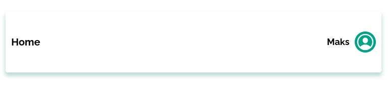
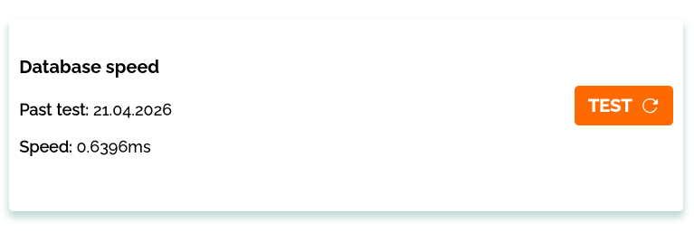
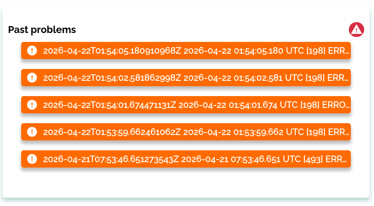
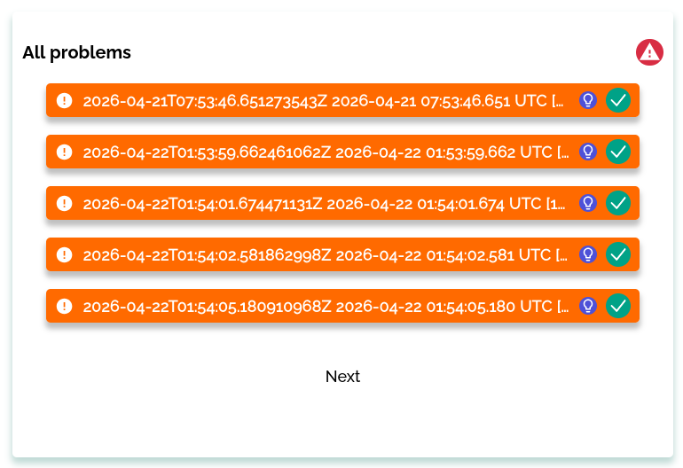

Documentation for the web interface
Due to the fact that there is a possibility that this web interface will be used by people who are quite far from the programming world. there was a need to make a short guide (overview) of some features.Home page
The home page is the place where the whole work process begins. Interface elements such as welcome element with the login of the current administrator account:
Next, we can observe a section for testing the database (its speed). The date of the last test is written here and the request processing speed in milliseconds. To test, you need to click on the "TEST" button:
The next element is a list of recent logs (errors). According to this section, we can conclude that the current state of the service that resides in the Docker container:
Problems page:
This page contains all the issues. They are located based on the time when the erroneous log appeared. There are "Next" and "Back" buttons with which you can scroll through the page (5 elements on one):